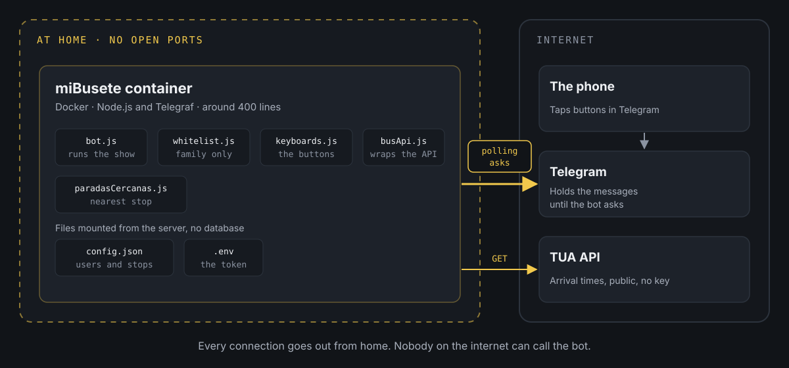

How to create a Telegram bot.
My daughter has an iPhone 7 Plus handed down from her mother (who in turn inherited it from me), and the official app for the Oviedo buses didn't work well on it. It took ages to load and often threw errors.
When your teenage daughter is starting to get around town and can't quickly find out how long the bus will be or where to catch it, that's a problem. But tech parents use problems as an excuse to tinker.
Years ago I built an app for the Pebble watch (a smartwatch with an e-paper screen) that used the public API behind the city buses' website. It turns out the API is still the same and still public. Off we go, but... what's the quickest solution that delivers the most value?
A Telegram bot
At home we don't use WhatsApp to talk to each other, we use Telegram, which lets you create bots. Since I already had the Docker server running all day, I thought: what if I build a private, easy-to-use bot where you say whether you're heading into town or heading home, and it tells you how long our lines will be at our usual stops? What if I also add the ones for Parque Principado (the classic out-of-town shopping centre where teenagers go to spend the afternoon), so she has them to hand when she goes there? And what if it also finds the nearest stop based on her location, in case there's a closer one she doesn't know about?
So we got to work, and that's how miBusete was born. It's driven entirely by buttons, with no typing, and it answers a single question: how long until the bus I care about, in minutes and with the estimated arrival time.
How it's built
miBusete is a Docker container with a Node.js app and the Telegraf library, which makes talking to Telegram much simpler. It's six files and around 400 lines in total. It has no database: everything it needs (who can use it, which stops and which lines) lives in two configuration files.

The key is how it receives messages. A Telegram bot can work in two ways:
- Webhook: Telegram calls your server every time someone taps a button. For that, your server has to be published on the internet, with a URL and an HTTPS certificate, and you need to open a port on your router.
- Polling: the bot itself keeps asking Telegram whether there's anything new. Telegram holds on to the messages until the bot collects them.
I went with polling. Every connection goes out from home (to Telegram and to the bus API), so nothing of mine is exposed: no open ports, no public URL, no certificates. If I switch the container off tomorrow, nobody outside notices anything except that the bot doesn't reply.
The other important decision was not to let the bot talk directly to the API of TUA (the bus company). In between there's a module, busApi.js, that turns its response into something simple: line, minutes and arrival time. If the API changes one day, that's the only file I have to touch.
Creating the bot in Telegram
Bots are created from Telegram itself, by talking to another bot:
- Open a chat with
@BotFatherand type/newbot. - Choose a display name and a username ending in
bot. The short ones are usually taken, so you'll need a bit of imagination. - BotFather gives you a token. Keep it safe: whoever has it controls the bot.
- If you like, you can add a description and a picture from
/mybots.
The token goes in a .env file, outside the code:
TELEGRAM_BOT_TOKEN=coloca_aqui_el_token_de_botfatherWith that you can write the simplest possible bot. First, the two dependencies:
npm install telegraf dotenvAnd a src/bot.js file that replies to /start:
require('dotenv').config();const { Telegraf } = require('telegraf'); const bot = new Telegraf(process.env.TELEGRAM_BOT_TOKEN); bot.start((ctx) => ctx.reply('Hola, soy miBusete')); bot.launch();console.log('miBusete arrancado (polling)');bot.launch() starts polling with no further configuration. When you run it with node src/bot.js (or in the container), you should see this in the log:
miBusete arrancado (polling)If you send it /start from Telegram, it replies. From here on, it's all about adding buttons.
Family only: the whitelist
A Telegram bot is public: anyone who finds its name can message it. So that only we can use it at home, every message first goes through a filter with the list of allowed users. In Telegraf that's a middleware, a function that runs before anything else:
function crearWhitelistMiddleware(whitelist) { const permitidos = new Set(whitelist.map(String)); return (ctx, next) => { const userId = String(ctx.from?.id || ''); if (!permitidos.has(userId)) { console.warn(`[whitelist] Acceso rechazado para userId=${userId}`); return ctx.reply('No tienes acceso a este bot.'); } return next(); };} bot.use(crearWhitelistMiddleware(config.whitelist));If the user isn't on the list, the message never reaches any button or command. The list lives in config.json, alongside the stops for each direction (the data in this example is made up):
{ "whitelist": [111111111, 222222222], "direcciones": { "ida": [{ "id": "1234", "nombre": "Parada de ejemplo" }], "vuelta": [{ "id": "5678", "nombre": "Otra parada" }] }}You can get your Telegram ID from the @userinfobot bot. And there's a handy trick: since the filter writes the rejected userId to the log, if someone new messages the bot, their ID shows up in the logs and you just copy it into the list.
config.json and .env are never pushed to the repository. They're in .gitignore, and templates are published instead (config.json.example and .env.example):
node_modules/.envconfig.jsonBefore the first commit, a quick git status to check that neither of them appears in the list.
The navigation interface

The bot has four screens: choosing a direction (into town, home or the shopping centre), the list of stops for that direction, a stop's detail with how long each line will be and, finally, the nearest stop. The detail screen has a button to refresh and another to go back.
The interesting bit is that the bot doesn't remember anything between taps. Each button carries its own meaning inside it, in a field called callback_data:
direccion:idaparada:ida:1234refrescar:ida:1234When you tap "Refrescar" (refresh), the button already says which direction and which stop you were looking at, so the bot needs no sessions and no database. It catches each type of button with a regular expression (bot.action(/^parada:(...):(.+)$/)) and that's it.

The TUA API is slow (it takes several seconds), and you notice it. So the bot replies straight away with "Consultando..." (checking) and then edits that same message with the result. The user sees that something is happening, the chat doesn't fill up with repeated messages when refreshing and, if something fails, the error appears right there instead of leaving an endless "Consultando...".
This also sidesteps a classic Telegram error: if you try to edit a message with exactly the same text it already has (refresh twice in a row and the minutes haven't changed), Telegram rejects it with message is not modified. By always going through an "Actualizando..." (updating) step, the text always changes.
Which stop is nearest?
Inside each direction there's a button to find the nearest stop. When you tap it, the bot shows Telegram's built-in button for sharing your location and, with the coordinates, works out the distance to every stop in that direction using the Haversine formula (the distance between two points on a sphere):
function distanciaMetros(lat1, lng1, lat2, lng2) { const dLat = rad(lat2 - lat1); const dLng = rad(lng2 - lng1); const a = Math.sin(dLat / 2) ** 2 + Math.cos(rad(lat1)) * Math.cos(rad(lat2)) * Math.sin(dLng / 2) ** 2; return 6371000 * 2 * Math.atan2(Math.sqrt(a), Math.sqrt(1 - a));}
With around 80 stops per direction, going through all of them is instant. No mapping API is needed. The result includes the distance, the times for that stop and a Google Maps link to walk there.
This is the one small exception to not storing anything: the location message arrives without the callback_data from the previous button, so the bot notes in memory which direction that chat asked for and deletes it as soon as it's used.
The most fun part was getting the coordinates, because the API doesn't provide them. It turns out the TUA website draws a map for each line, and the source code of each page contains the stops with their latitude and longitude. All it took was saving the HTML from the browser, extracting them with a small script, sorting them by direction and removing duplicates. Sometimes the data you need is already on the web, even if there's no API.
Things to bear in mind
A silent error looks like a hang. For a few days, searching for the nearest stop left the bot stuck on "Buscando..." (searching) forever. It wasn't the API: the container logs (docker logs) showed 400: Bad Request: message can't be edited. The message had been sent with one type of keyboard and then the bot tried to edit it with another. Removing it fixed things, but what really made it hard was that the error was being swallowed silently. Since then, every failure goes to the log and to the chat itself.
An exact text filter fails without warning. To avoid showing irrelevant lines, the bot compares each bus's destination with a list of allowed destinations, letter by letter. When I reorganised that list, I put one line's destinations in the opposite direction, and the bot started saying "Sin servicio" (no service) at almost every stop. No errors, just empty results. I solved it by looking at the API's raw response and comparing it with the configuration:
curl -s https://www.tua.es/rest/estimaciones/1234The API isn't official. It's public and needs no key, but it isn't documented, so it could change or disappear without notice. That's why it's isolated in a single module.
Why it's worth it
Making a Telegram bot is free, easy and quick. As a proof of concept it was great, and now the three of us use it to check the bus in a couple of taps.
It works on any device: it's very rare for an old phone to be left without a working version of Telegram, and I can even use it from my PC with the desktop app or the web version.
And since everything lives in a container and a couple of files, making changes and redeploying them takes minutes.
I hope it helps you build that bot you've had in mind for ages and thought was really complicated. Far from it!